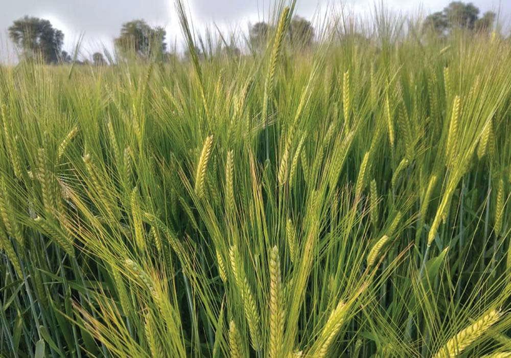
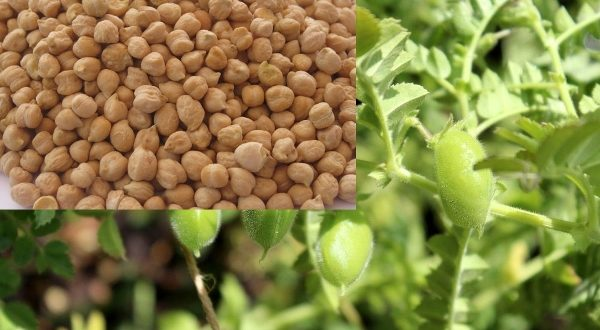
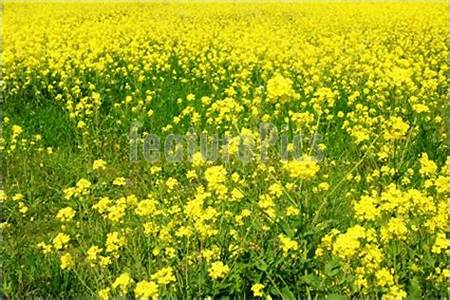
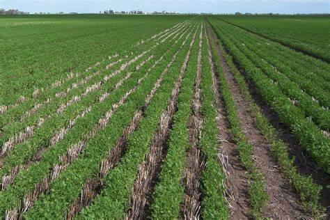
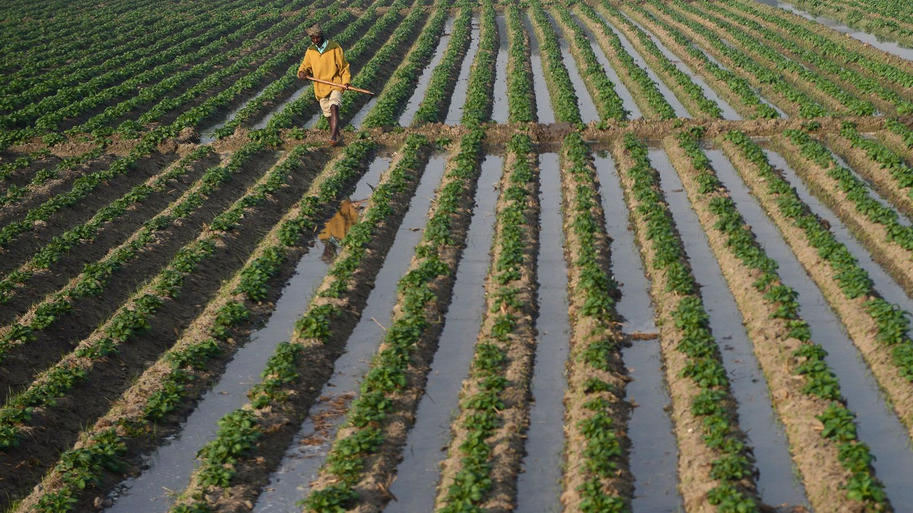
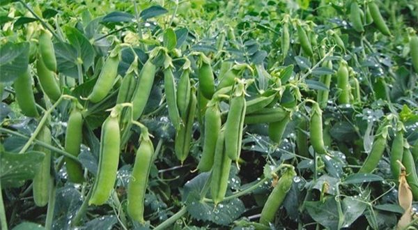

<link rel="stylesheet" href="../CSS/Crops.css">
<link rel="stylesheet" href="../CSS/Rabi.css">
<link rel="stylesheet" href="../CSS/Banner.css">
<!DOCTYPE html>
<html lang="en">

    <head>
        <meta charset="UTF-8">
        <meta http-equiv="X-UA-Compatible" content="IE=edge">
        <meta name="viewport" content="width=device-width, initial-scale=1.0">
        <title>Rabi Crops</title>
    </head>

    <header>
        <h1>Rabi Crops</h1>
    </header>

    <main>
        <div>
            <h1>Major Rabi Crops</h1>
        </div>
    
        <section>
            <br clear="left"/>
            <b>Wheat</b>
            
            
            <p1>
                <br><br><b>About the crop :-</b>  Wheat (Triticum spp.) occupies the prime position among the food crops in the world. In India, it is the second important food crop being next to rice and contributes to the total foodgrain production of the country to the extent of about 25%. Wheat has played a very vital role in stabilizing the foodgrain production in the country over the past few years.<br>
                <br><b>Soil required for the crop :-</b> Wheat needs soil with a moderate amount of water holding capacity. Being very sensitive to water logging, heavy soils with poor drainage capacity is not preferred for wheat cultivation. Generally, black cotton soil with good drainage capacity and a neutral pH is preferred for cultivation. If wheat is grown as a dry crop heavy soil with a good drainage capacity is preferred. On the contrary, soil with moderate drainage capacity is preferred for wheat as irrigated crop.<br>
                <br><b>Weather conditions & Temperature needed :-</b> Wheat is a widely adaptable crop that can be grown in climates ranging from temperate to tropical and cold northern parts. In addition it can be cultivated anywhere from land on sea level to an altitude of up to 3300 meters. Places with a cool, moist weather for most part of the year followed by a short, dry and warm spell is most suited for wheat cultivation. This type of weather condition permits appropriate maturing and ripening of grains. However, areas with heavy rainfall, moist and warm climate are not suited for commercial wheat farming.<br>
                <!-- <br><b>Rainfall needed :-</b> If the crop is sown in monsoon time (July). it may require l to 3 irrigations depending upon rains. For summer crops, 6 to 7 irrigations may be carried out due to high temperature. In South India, Rabi season crops need about 4 to 5 irrigations.<br> -->
                <br><b>Largest Producing states :-</b> Haryana, Bihar, Gujarat, Punjab, Madhya Prades<br>
                <!-- <br><b>Average selling price of crop :-</b> 1200-1500 q/ha<br> -->
                <br><b>MSP provided for the crop :-</b> 1925 per quintals
            </p1>
        </section>
        <hr>
        
        <section>
            <br clear="right"/>
            <b>Barley</b>
            
            
            <p3>
                <br/><br><b>About the crop :-</b>  Barley (Hordeum vulgare L.)  is popularly known as “Jau” in Hindi  and one of the most important cereal grain crops after rice, wheat & maize. In India, this crop is cultivated as a summer crop in temperate regions & as a winter crop in tropical regions. Barley is a short growing season crop and has good drought tolerant. In olden days, Barley was mainly used as livestock feed and currently it is one of the grains used daily in human consumption (barley malt).Barley also play major role in industrial consumption.<br>
                <br><b>Soil required for the crop :-</b> Barley crop can be grown on wide range of soils including saline, sodic & lighter soils. However, this crop thrives best in sandy to moderately heavy loam soils having neutral to saline reaction and medium fertility. Acidic soils are not suitable for Barley cultivation.<br>
                <br><b>Weather conditions & Temperature needed :-</b> Barley can be grown as summer crop as well as winter crop. This crop is mainly cultivated as Rabi season crop in India. This crop requires temperature of 12°C to 16°C at growing stage and about 30°C to 32°C at maturity. This crop is very sensitive to frost at any stage of its growth. This crop yield is highly impacted by incidence of frost at flowering stage. Barley has very good tolerance to drought conditions.<br>
                <!-- <br><b>Rainfall needed :-</b> If the crop is sown in monsoon time (July). it may require l to 3 irrigations depending upon rains. For summer crops, 6 to 7 irrigations may be carried out due to high temperature. In South India, Rabi season crops need about 4 to 5 irrigations.<br> -->
                <br><b>Largest Producing states :-</b> The major production states of Barley in India are Rajasthan, Uttar Pradesh, Madhya Pradesh, Haryana, Punjab, West Bengal, Jammu & Kashmir, Some regions in Bihar, Uttaranchal and Himachal Pradesh.<br>
                <!-- <br><b>Average selling price of crop :-</b><br> -->
                <br><b>MSP provided for the crop :-</b> 1525 per quintal
            </p3>
        </section>

        <hr>

        <section>
            <br clear="left"/>
            <b>Gram</b>
            
            
            <p1>
                <br><br><b>About the crop :-</b>  Gram commonly known as chick pea or Bengal gram is the most important pulse crop of India. It is used for human consumption as well as for feeding to animals. Fresh green leaves are used as vegetable while straw of chickpea is an excellent fodder for cattle. The grains are also used as vegetable. India, Pakistan, Ethiopia, Burma and Turkey are main gram growing countries. India ranks first in the world in respect of production.<br>
                <br><b>Soil required for the crop :-</b> It can be grown on wide variety of soils. Sandy loam to clay loam is considered to be most suitable soil for gram cultivation. Soil having water logging problem are not suitable for cultivation. Saline alkaline soil are not suitable. pH in the range of 5.5 to 7 is ideal for sowing.<br>
                <br><b>Weather conditions & Temperature needed :-</b> It is best suited to areas having low to moderate rainfall and a mild cold weather. Excessive rains soon after sowing or at flowering stage are harmful for the crop. Severe cold is injurious, and is very harmful. It is best suited to areas having moderate rainfall of 60-90 cm per annum. It has an indeterminate growth habit, which means that the growth cycle extends as long as moisture is available.<br>
                <!-- <br><b>Rainfall needed :-</b> The average annual rainfall required by rice is 150 cm.<br> -->
                <br><b>Largest Producing states :-</b> Maharashtra is the largest producer of Green gram accounting nearly for 23.05 percent of the total production followed by Karnataka (17.46 percent), Andhra Pradesh (17.39 percent), Bihar (14.69 percent), Rajasthan (7.50 percent) and Tamil Nadu (7.25 percent).<br>
                <!-- <br><b>Average selling price of crop :-</b> 1200-1500 q/ha<br> -->
                <br><b>MSP provided for the crop :-</b> 4875 per quintals
            </p1>
        </section>

        <hr>

        <section>
            <br clear="right"/>
            <b>Mustard</b>
            
            
            <p3>
                <br/><br><b>About the crop :-</b>  Mustard belongs to the family of “Cruciferae” and popularly used in Indian cooking. India is number one in production of mustard. Mustard gives edible oil which is used as cooking In India. Mustard seed is used as condiment in the preparation of vegetable and curries in India. Split mustard seed  and oil is used for pickling. The methi leaves of the young plants are used as vegetable. It can be used as oil cake to feed cattle.<br>
                <br><b>Soil required for the crop :-</b> Mustard can be grown in wide varieties of soils that ranges from light to heavy loamy soils. Medium to deep soils with good drainage is best suitable for mustard cultivation. Soil ideal pH range for Mustard is 6.0 to 7.5.Make sure to carry out a soil test to find out the soil properties like soil type, strength and nutritious levels.<br>
                <br><b>Weather conditions & Temperature needed :-</b> Mustard is grown in subtropical climate. Mustard thrives well in dry and cool climate, therefore mustard mostly grown as Rabi season crop. Mustard crop requires the temperatures between 10°C to 25°C.Mustard crop is grown in the areas receiving 625 -1000 mm yearly rainfall. This crop does not tolerate frost, so it requires clear sky with frost free conditions.<br>
                <br><b>Largest Producing states :-</b> The state of Rajasthan stands uniquely in the 1st position in the list of the top 10 largest mustard producing states in India. This state is the leading and the largest producer of mustard seeds in India to a large extent significantly.<br>
                <!-- <br><b>Average selling price of crop :-</b><br> -->
                <br><b>MSP provided for the crop :-</b> 4000 per quintals
            </p3>
        </section>

        <hr>

        <section>
            <br clear="left"/>
            <b>Masoor</b>
            
            
            <p1>
                <br><br><b>About the crop :-</b>  Growing lentil commercially (masoor cultivation) is very popular in many countries around the world, and it is one of the most important protein rich pulse crop.<br>
                It is most commonly eaten as Dal in India, by splitting into 2 cotyledons, deep orange red or orange yellow in color.The lentil (Lens culinaris) is actually an edible legume, and it is very important in South Asian cuisine.<br>
                <br><b>Soil required for the crop :-</b> Lentil can be grown on all type of soil. Saline, Alkaline or waterlogged soils should be avoided. Soil should be friable and weed free so that seed could be placed at uniform depth.<br>
                <br><b>Weather conditions & Temperature needed :-</b> Required climatic conditions for growing lentil can vary from place to place (across different growing regions).<br>
                <!-- <br><b>Rainfall needed :-</b> The average annual rainfall required by rice is 150 cm.<br> -->
                <br><b>Largest Producing states :-</b> In India, Madhya Pradesh and Uttar Pradesh are largest producers with both producing more than 70 percent of the total. Other major producers include West Bengal and Bihar.<br>
                <!-- <br><b>Average selling price of crop :-</b> 1200-1500 q/ha<br> -->
                <br><b>MSP provided for the crop :-</b> 4800 per quintals
            </p1>
        </section>

        <hr>

        <section>
            <br clear="right"/>
            <b>Potato</b>
            
            
            <p3>
                <br/><br><b>About the crop :-</b>  The Potato, a native of South America occupies a largest area any single vegetable in the world. It has a special value as food. The consumption of potato per head is very low in India as compared to that of Western Countries. Potato belongs to family Solanaceae and botanical name is Solanum tuberosum.<br>
                <br><b>Soil required for the crop :-</b> The potato can be grown almost on any type of soil except saline and alkaline soils. Soils, which are naturally loose, offer least resistance to the enlargement of the tubers is preferred. Loamy and sandy loam soils, rich in organic matter with good drainage and aeration are most suitable for cultivation of potato crop. The soil with pH range of 5.2-6.4 is considered to be ideal.<br>
                <br><b>Weather conditions & Temperature needed :-</b> Potato is a temperate climate crop, however it grows under a diverse range of climatic conditions. It is grown only under such conditions where the temperature during the growing seasons is moderately cool. The vegetative growth of the plant is best at a temperature of 24°C while tuber development is favoured at 20°C. Hence, potato is grown as a summer crop in the hills and as a winter crop in the tropical and subtropical regions. The crop can be raised up to an altitude of 3000 m above the sea level.<br>
                <!-- <br><b>Rainfall needed :-</b> If the crop is sown in monsoon time (July). it may require l to 3 irrigations depending upon rains. For summer crops, 6 to 7 irrigations may be carried out due to high temperature. In South India, Rabi season crops need about 4 to 5 irrigations.<br> -->
                <br><b>&nbsp;&nbsp;&nbsp;&nbsp;&nbsp;&nbsp;&nbsp;&nbsp;&nbsp;&nbsp;&nbsp;&nbsp;&nbsp;&nbsp;&nbsp;&nbsp;&nbsp;&nbsp;&nbsp;&nbsp;&nbsp;&nbsp;&nbsp;&nbsp;&nbsp;&nbsp;&nbsp;&nbsp;&nbsp;&nbsp;&nbsp;&nbsp;&nbsp;&nbsp;&nbsp;&nbsp;&nbsp;&nbsp;&nbsp;&nbsp;&nbsp;&nbsp;&nbsp;&nbsp;&nbsp;&nbsp;&nbsp;&nbsp;&nbsp;&nbsp;&nbsp;&nbsp;&nbsp;&nbsp;&nbsp;&nbsp;&nbsp;&nbsp;&nbsp;&nbsp;&nbsp;&nbsp;&nbsp;&nbsp;&nbsp;&nbsp;&nbsp;&nbsp;&nbsp;&nbsp;&nbsp;&nbsp;&nbsp;&nbsp;&nbsp;&nbsp;&nbsp;&nbsp;&nbsp;&nbsp;&nbsp;&nbsp;&nbsp;&nbsp;&nbsp;&nbsp;&nbsp;&nbsp;&nbsp;&nbsp;&nbsp;&nbsp;&nbsp;&nbsp;&nbsp;&nbsp;&nbsp;&nbsp;&nbsp;&nbsp;&nbsp;&nbsp;&nbsp;&nbsp;&nbsp;&nbsp;&nbsp;&nbsp;&nbsp;&nbsp;&nbsp;&nbsp;&nbsp;&nbsp;&nbsp;&nbsp;&nbsp;&nbsp;&nbsp;&nbsp;&nbsp;&nbsp;&nbsp;&nbsp;&nbsp;&nbsp;&nbsp;&nbsp;&nbsp;&nbsp;&nbsp;&nbsp;Largest Producing states :-</b> UP, West Bengal, Gujarat , Bhihar , Madhya Pradesh.<br>
                <!-- <br><b>Average selling price of crop :-</b><br> -->
                <br><b>&nbsp;&nbsp;&nbsp;&nbsp;&nbsp;&nbsp;&nbsp;&nbsp;&nbsp;&nbsp;&nbsp;&nbsp;&nbsp;&nbsp;&nbsp;&nbsp;&nbsp;&nbsp;&nbsp;&nbsp;&nbsp;&nbsp;&nbsp;&nbsp;&nbsp;&nbsp;&nbsp;&nbsp;&nbsp;&nbsp;&nbsp;&nbsp;&nbsp;&nbsp;&nbsp;&nbsp;&nbsp;&nbsp;&nbsp;&nbsp;&nbsp;&nbsp;&nbsp;&nbsp;&nbsp;&nbsp;&nbsp;&nbsp;&nbsp;&nbsp;&nbsp;&nbsp;&nbsp;&nbsp;&nbsp;&nbsp;&nbsp;&nbsp;&nbsp;&nbsp;&nbsp;&nbsp;&nbsp;&nbsp;&nbsp;&nbsp;&nbsp;&nbsp;&nbsp;&nbsp;&nbsp;&nbsp;&nbsp;&nbsp;&nbsp;&nbsp;&nbsp;&nbsp;&nbsp;&nbsp;&nbsp;&nbsp;&nbsp;&nbsp;&nbsp;&nbsp;&nbsp;&nbsp;&nbsp;&nbsp;&nbsp;&nbsp;&nbsp;&nbsp;&nbsp;&nbsp;&nbsp;&nbsp;&nbsp;&nbsp;&nbsp;&nbsp;&nbsp;&nbsp;&nbsp;&nbsp;&nbsp;&nbsp;&nbsp;&nbsp;&nbsp;&nbsp;&nbsp;&nbsp;&nbsp;&nbsp;&nbsp;&nbsp;&nbsp;&nbsp;&nbsp;&nbsp;&nbsp;&nbsp;&nbsp;&nbsp;&nbsp;&nbsp;&nbsp;&nbsp;&nbsp;&nbsp;MSP provided for the crop :-</b> rs 2,500 per quintals
            </p3>
        </section>

        <hr>

        <section>
            <br clear="left"/>
            <b>Pea</b>
            
            
            <p1>
                <br><br><b>About the crop :-</b>  It belongs to Leguminaceae family. It is a cool season crop grown throughout the world. Green pods are used for vegetable purpose and dried peas are used as pulse. In India it is cultivated in Himachal Pradesh, Madhya Pradesh, Rajasthan, Maharashtra, Punjab, Haryana, Karnataka and Bihar. It is rich source of proteins, amino acids and sugars. Green peas straw is good source of nutritional fodder for livestock.<br>
                <br><b>Soil required for the crop :-</b> It can grow on various soil types from sandy loam to clay soils. It gives best results when grown under well drained soil with pH range of 6 to 7.5. Crop cannot withstand in water logging conditions. For acidic soil, do limming.<br>
                <br><b>Weather conditions & Temperature needed :-</b> Climatic conditions are very important when planting green peas; it determines the time of sowing, place in the crop rotation. Green peas grow best in moist and cool regions. Ideal temperature for green peas cultivation is between 10C to 30C. Above 30C temperature may result in poor yielding.<br>
                <!-- <br><b>Rainfall needed :-</b> The average annual rainfall required by rice is 150 cm.<br> -->
                <br><b>Largest Producing states :-</b> Uttar Pradesh, Madhya Pradesh, Punjab , Jharkhand , Himachal Pradesh<br>
                <!-- <br><b>Average selling price of crop :-</b> 1200-1500 q/ha<br> -->
                <!-- <br><b>MSP provided for the crop :-</b> 5275 per quintals -->
            </p1>
        </section>

        <hr>

        <!-- <section>
            <br clear="right"/>
            <b>Jute</b>
            
            
            <p3>
                <br/><br><b>About the crop :-</b>  Jute is a long, soft, shiny bast fiber that can be spun into coarse, strong threads. It is produced from flowering plants in the genus Corchorus, which is in the mallow family Malvaceae. The primary source of the fiber is Corchorus olitorius, but it is considered inferior to Corchorus capsularis.<br>
                <br><b>Soil required for the crop :-</b> River basins or alluvial or loamy soils are best for jute cultivation. Jute cultivation in red soils may require high dose of manure and PH range between 4.8 and 5.8 is best for its cultivation.<br>
                <br><b>Weather conditions & Temperature needed :-</b> The jute plant requires high temperature with a minimum of 27 degree centigrade and an optimum of about 34 degree centigrade during the period of growth. The relative humidity requirement is also high ranging from 80 to 90 percent.<br>
                <br><b>Rainfall needed :-</b> During the growing period, the jute plant needs an evenly distributed rainfall of 170 cm to 200 cm.<br>
                <br><b>Largest Producing states :-</b> West Bengal comes first in the production of raw jute. The main jute growing districts are Murshidabad, West Dinajpur, Cooch Behar district, Nadia district, Burdwan, Malda district and Midnapore.<br>
                <br><b>Average selling price of crop :-</b><br>
                <br><b>MSP provided for the crop :-</b> Rs 3,700 per quintal
            </p3>
        </section> -->
    </main>
    
</html>

<footer>
    <!-- <a href="Help.html" target=_blank>Contact Us</a> -->
    <a href="#">Terms of Use</a>
    <a href="#">Privacy Policy</a>
    <a href="https://upescsi.in/Hackathon-5.0/index.html" target=_blank>&commat; 2021 | Hackathon 5.0</a>
</footer>